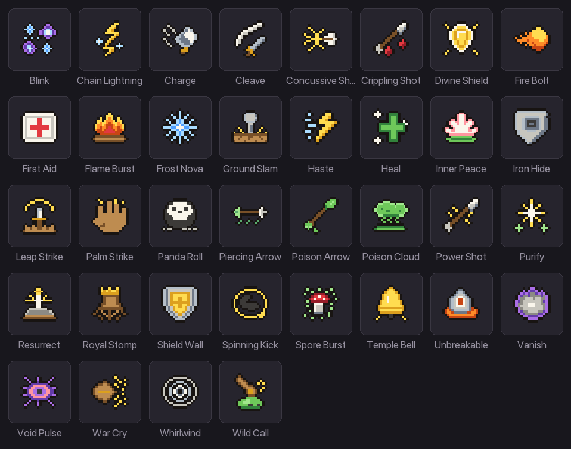
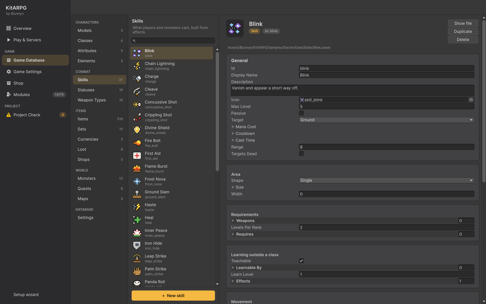

Skills
Una skill es un objetivo, un área y una lista de efectos: daño, curaciones, buffs, estados, empujes, revivir e invocaciones, más cómo se mueve quien la lanza, si rebota, si se queda en el suelo o si se canaliza. Esta página cubre cada campo de una skill, cada efecto de skill, cómo aprenden y lanzan skills los jugadores, y cómo armar paso a paso una skill con un área y un estado.
Qué es una skill

Cada skill responde cuatro preguntas:
- A quién o adónde apunta: a quien la lanza, a un enemigo, a un aliado o a un punto del suelo.
- Qué área cubre: un objetivo, un círculo, un cono o una línea.
- Qué hace: una lista de efectos. Los efectos dañinos caen sobre los enemigos que alcanza; los amistosos, sobre quien la lanza y los aliados que alcanza. Así, una misma skill puede herir a los enemigos que te rodean y darle un buff a tu grupo a la vez.
- Cómo se juega: tiempo de lanzamiento, animación, proyectil, movimiento, rebotes, zona en el suelo, canalización.
Cada número que puede crecer con el rango es un valor por nivel: Base Value en el rango 1 y Per Level sumado por cada rango después. El daño de Fire Bolt en el rango 3 con mínimo 12 y 5 por nivel es 12 + 5 × 2 = 22.
Las áreas son formas abstractas. Los modos en tiempo real leen los tamaños en metros.
Los jugadores usan skills; los monstruos también, desde Skills en sus datos de monstruo (siempre en rango 1, sin tiempo de lanzamiento, cuando están listas y al alcance, compartiendo el turno de su ataque básico). Consulta Monstruos.
Dónde están las skills

Game Database > Combat > Skills lista cada skill. Crea una ahí (+ New skill) o con Create > KitARPG > Skill. Una skill forma parte del juego cuando una clase la lista, un ítem o un NPC la enseña o la lanza, o un monstruo la usa.
En el juego, la ventana Skills (K) lista primero las skills de la clase y luego las aprendidas en otros lados, cada una con su ícono (arrástralo a la barra rápida), su rango, el requisito que le falta y + para subirla. Una insignia en el botón de skills muestra los puntos sin gastar. La ficha de la skill (tooltip) muestra el costo, la recarga, el tiempo de lanzamiento, el alcance, el área, las armas necesarias y cada efecto en el rango actual.
Campos
Además de Id, Display Name, Description e Icon:
Básicos
| Campo | Qué hace | Por defecto |
|---|---|---|
Max Level (maxLevel) |
Rango más alto. Una clase puede poner un límite más bajo para sí. | 5 |
Passive (passive) |
Nunca se lanza. Sus efectos Stat Buff cuentan como fuentes de stats permanentes mientras la skill está aprendida. | Apagado |
Target (target) |
Self, Enemy, Ally o Ground. Consulta Objetivos y áreas. | Enemy |
Mana Cost (manaCost) |
Maná por lanzamiento, por rango. | 10, +2 por rango |
Cooldown (cooldown) |
Segundos antes de que se pueda lanzar otra vez, por rango. | 5 |
Cast Time (castTime) |
Segundos antes de que lleguen los efectos, por rango. 0 es instantánea. |
0 |
Range (range) |
Metros de quien la lanza al objetivo o al punto. Se ignora con Self. | 8 |
Targets Dead (targetsDead) |
Solo alcanza a aliados caídos, para revivir. | Apagado |
Área
| Campo | Qué hace | Por defecto |
|---|---|---|
Shape (shape) |
Single, Circle, Cone o Line. | Single |
Size (size) |
Radio del círculo, largo del cono o largo de la línea, en metros, por rango. | 3 |
Width (width) |
Ángulo del cono en grados, o ancho de la línea en metros. | 60 |
Requisitos
| Campo | Qué hace | Por defecto |
|---|---|---|
Weapons (weapons) |
Solo se puede lanzar con uno de estos tipos de arma en la mano principal. Vacío significa cualquiera, o ninguna. | Vacío |
Levels Per Rank (levelsPerRank) |
Niveles de personaje entre un rango y el siguiente, contados desde el nivel en que se desbloquea la skill. | 2 |
Requires (requires) |
Skills que hay que conocer en un rango antes de poder aprender o subir esta, de cualquier origen: Skill y Rank. | Vacío |
Aprender fuera de una clase
| Campo | Qué hace | Por defecto |
|---|---|---|
Teachable (teachable) |
Los pergaminos, libros y maestros pueden enseñarla a personajes cuya clase no la tiene. | Prendido |
Learnable By (learnableBy) |
Clases a las que un pergamino o un maestro puede enseñarla. Vacío es cualquier clase. | Vacío |
Learn Level (learnLevel) |
Nivel de personaje necesario para aprenderla de un pergamino o un maestro. Los rangos siguientes siguen Levels Per Rank. | 1 |
Efectos
| Campo | Qué hace | Por defecto |
|---|---|---|
Effects (effects) |
Lo que hace la skill, en orden. Agrega una entrada con +, y luego Pick a type. Consulta Efectos de skill. | Vacío |
Movimiento
| Campo | Qué hace | Por defecto |
|---|---|---|
Movement (movement) |
Cómo llega quien la lanza al objetivo o al punto antes de que lleguen los efectos: None, Teleport (aparece ahí en el acto), Dash (se lanza por el suelo; las paredes lo frenan) o Leap (salta en arco y cae ahí). Los efectos llegan alrededor de donde llega quien la lanza. | None |
Move Speed (moveSpeed) |
Metros por segundo de una embestida o un salto. | 16 |
Leap Height (leapHeight) |
Metros que sube un salto en su punto más alto. | 1,6 |
Stop Short (stopShort) |
Metros antes de un objetivo en que se detiene quien la lanza, para caer a su lado. | 1 |
Quien está enraizado no puede embestir ni saltar, pero sí teletransportarse. Los teletransportes y los saltos caen en el punto caminable más cercano.
Rebotes
| Campo | Qué hace | Por defecto |
|---|---|---|
Bounces (bounces) |
Veces que salta del primer objetivo al siguiente más cercano, como un rayo en cadena o un rebote. Las skills de curación saltan entre aliados. Cada salto solo va a alguien a la vista. | 0 |
Bounce Range (bounceRange) |
Metros que alcanza un rebote. | 5 |
Bounce Keep (bounceKeep) |
Parte del daño y la curación que se conserva en cada salto, de 0 a 1. | 0,8 |
Zona
| Campo | Qué hace | Por defecto |
|---|---|---|
Zone Time (zoneTime) |
Segundos que el área se queda en el suelo, cayendo otra vez en cada tic, por rango. 0 cae una vez. |
0 |
Zone Tick (zoneTick) |
Segundos entre las caídas de la zona. | 1 |
Zone Effect (zoneEffect) |
En el suelo mientras dura la zona, del tamaño de ella. Vacío muestra en cambio el efecto de área. | En el suelo |
Canalización
| Campo | Qué hace | Por defecto |
|---|---|---|
Channel Time (channelTime) |
Segundos que los efectos siguen cayendo después del lanzamiento, con el clip de lanzamiento en bucle, por rango. 0 los hace caer una vez. |
0 |
Channel Ticks (channelTicks) |
Veces que caen los efectos durante la canalización. | 3 |
Aspecto
| Campo | Qué hace | Por defecto |
|---|---|---|
Use Weapon Attack (useWeaponAttack) |
Quien la lanza reproduce la animación de ataque de su arma y el proyectil del arma, como un ataque básico más fuerte, y gasta munición si el arma la usa. Si no, se reproduce la animación de skill de cada personaje. | Apagado |
Cast Effect (castEffect) |
Sobre quien la lanza mientras lanza o canaliza. | En el suelo, sigue |
Launch Effect (launchEffect) |
Sobre quien la lanza en cada frame de golpe de su animación. | En la mano derecha |
Projectile (projectile) |
Vuela al objetivo o al punto; los efectos llegan cuando arriba. Prefab, From (el punto del que sale) y Speed (metros por segundo). | Ninguno, desde la mano derecha, 20 |
Area Effect (areaEffect) |
Donde cae el área, del tamaño de ella. Sin uno, se dibuja un contorno plano del área en el color del elemento. | En el suelo |
Hit Effect (hitEffect) |
Sobre cada objetivo. Vacío usa el del elemento. | Ninguno |
Cada aparición de efecto tiene Prefab, Socket (Body, Floor, Head, RightHand, LeftHand), Follow (se mueve con el personaje), Lifetime (0 usa la duración de sus partículas) y Tint (coloreado como el elemento, prendido por defecto).
Qué animación se reproduce se define por personaje, en Character Animations: un lanzamiento y un uso predeterminados, y uno por skill. Consulta Animaciones.
Objetivos y áreas
Objetivos
| Objetivo | Apunta a | A quién llegan los efectos con forma Single |
|---|---|---|
| Self | Nada: se centra en quien la lanza. | Efectos amistosos sobre quien la lanza. |
| Enemy | Un enemigo. | Efectos dañinos sobre el objetivo; efectos amistosos sobre quien la lanza. |
| Ally | Un aliado o tú mismo. | Efectos amistosos sobre el aliado, o sobre quien la lanza si el objetivo no es un aliado vivo. |
| Ground | Un punto del suelo. | Todos los que estén a menos de 1 metro del punto. |
Las skills Self y Ally son amistosas; las Enemy y Ground son hostiles. Los jugadores apuntan las skills hostiles haciendo clic en un enemigo o en el suelo. Con un objetivo, el servidor primero lleva caminando a quien la lanza hasta el alcance (modo top-down).
Formas
| Forma | Dónde | A quién alcanza |
|---|---|---|
| Single | El objetivo. | Consulta la tabla de arriba. |
| Circle | Sobre quien la lanza en las skills Self, en el punto apuntado en las demás. | Todos los que estén a menos de Size metros del centro. |
| Cone | Desde quien la lanza hacia donde apunta. | Todos los que estén a menos de Size metros y dentro de Width grados de la dirección apuntada. |
| Line | Desde quien la lanza hacia donde apunta. | Todos a lo largo de los primeros Size metros, a menos de Width ÷ 2 metros de la línea. |
Las distancias se miden en plano, sin contar la altura. Quien no se ve desde el centro del área (detrás de una pared) queda fuera; consulta Combate para la línea de visión.
En un área, los efectos dañinos caen sobre cada enemigo alcanzado y los amistosos sobre cada aliado alcanzado, incluido quien la lanza cuando está adentro.
Una Line con proyectil atraviesa todo lo que hay en su camino: cada objetivo recibe el golpe cuando el proyectil lo alcanza ("Goes through everything in its path" en la ficha).
Apuntar
Cuando un jugador presiona la tecla de una skill, la vista previa del área aparece en el suelo (o un anillo sobre el enemigo bajo el puntero); un clic o la misma tecla la lanza. Settings > Controls tiene una opción para lanzar en el acto. Cómo apunta cada modo de control está en Modos de control.
Efectos de skill
Los efectos se eligen de un menú: + en Effects, y luego Pick a type. Tus propias clases de efecto también aparecen ahí (consulta Efectos de skill en código).
Cada efecto es dañino (cae sobre enemigos) o amistoso (cae sobre quien la lanza y los aliados). Los efectos que ponen buffs, estados, empujes, revivir o invocaciones caen una vez por lanzamiento, en el primer golpe; el daño y la curación caen en cada golpe de la animación, repartidos entre los golpes.
Damage
Dañino. Hace daño de un elemento, y si quieres suma el arma de quien la lanza.
| Campo | Qué hace | Por defecto |
|---|---|---|
Element (element) |
El elemento. Vacío usa el elemento por defecto. | Ninguno |
Min (min) |
Tirada más baja, por rango. | 8, +4 por rango |
Max (max) |
Tirada más alta, por rango. | 12, +5 por rango |
Weapon Scale (weaponScale) |
Suma las tiradas de daño del arma, cada una multiplicada por esto, por rango. 0 ignora el arma. 0.8 suma 80 % de cada tirada del arma, en los elementos propios del arma. |
0 |
Las tiradas pasan por la misma fórmula que un ataque básico: daño de elemento, poder, resistencias, crítico. La ficha muestra "12 to 18 Fire damage" y "+80% of weapon damage".
Heal
Amistoso. Restaura vida.
| Campo | Qué hace | Por defecto |
|---|---|---|
Amount (amount) |
Vida restaurada, por rango, antes de la curación y la bonificación de curación de quien la lanza. | 20, +10 por rango |
Curación final = (cantidad + Heals de quien la lanza) × (1 + Heal bonus de quien la lanza), redondeada.
Stat Buff
Amistoso, o dañino cuando es un debuff. Cambia stats durante un rato. Úsalo para buffs de stats rápidos que no necesitan un asset de estado.
| Campo | Qué hace | Por defecto |
|---|---|---|
Modifiers (modifiers) |
Un paquete de modificadores completo. Igual en todos los rangos. | Vacío |
Duration (duration) |
Segundos, por rango. | 10 |
Debuff (debuff) |
En cambio baja las stats (cada número pasa a negativo), sobre enemigos. | Apagado |
El id del buff es el id de la skill: lanzarla otra vez lo reemplaza. En una skill pasiva, los modificadores cuentan mientras la skill esté aprendida y Duration se ignora.
Apply Status
Dañino o amistoso, según el estado. Pone un estado sobre cada objetivo.
| Campo | Qué hace | Por defecto |
|---|---|---|
Status (status) |
El estado. Su ajuste Harmful decide sobre quién cae. | Ninguno |
Duration (duration) |
Segundos, por rango. | 5 |
Chance (chance) |
Probabilidad de caer sobre cada objetivo, de 0 a 1, por rango. | 1 |
Stacks (stacks) |
Acumulaciones que se suman cada vez que cae. | 1 |
El estado cae en el rango de la skill, así que los valores por nivel propios del estado (daño por tic, escudo) crecen con la skill. Se aplican las inmunidades y resistencias del objetivo.
Remove Status
Quita estados: debuffs de aliados (limpiar) o buffs de enemigos (disipar).
| Campo | Qué hace | Por defecto |
|---|---|---|
Dispel (dispel) |
Apagado: limpia debuffs de aliados (amistoso). Prendido: disipa buffs de enemigos (dañino). | Apagado |
Only (only) |
Solo estos estados. Vacío quita cualquiera que se pueda quitar. | Vacío |
With Flags (withFlags) |
Solo estados que frenan a quien los tiene de esta forma, como Stun y Root. None quita cualquiera. | None |
Count (count) |
Cuántos se quitan por objetivo, los más nuevos primero. 0 los quita todos. |
0 |
Los estados con Removable apagado nunca se quitan.
Knockback
Dañino. Empuja cada objetivo lejos, o lo atrae con una distancia negativa. Las paredes lo frenan.
| Campo | Qué hace | Por defecto |
|---|---|---|
Distance (distance) |
Metros, por rango. Negativo atrae hacia quien la lanza, deteniéndose frente a él. | 3 |
Speed (speed) |
Metros por segundo. | 14 |
From Point (fromPoint) |
Lejos de donde cayó la skill en lugar de lejos de quien la lanza, para explosiones en el suelo. | Apagado |
Un empuje corta lo que estaba haciendo el objetivo. Los objetivos imparables no se pueden mover.
Revive
Amistoso. Trae de vuelta a aliados caídos. Úsalo en una skill con Targets Dead prendido.
| Campo | Qué hace | Por defecto |
|---|---|---|
Health (health) |
Parte de la vida con que vuelven, de 0 a 1, por rango. | 0,3, +0,1 por rango |
Mana (mana) |
Parte del maná con que vuelven, de 0 a 1, por rango. | 0,2 |
Un jugador revivido no pierde experiencia por esa muerte.
Summon
Cae una vez por lanzamiento sobre quien la lanza, alcance la skill a quien alcance. Llama monstruos que pelean por quien la lanza alrededor de donde cae la skill.
| Campo | Qué hace | Por defecto |
|---|---|---|
Monster (monster) |
El monstruo invocado. | Ninguno |
Count (count) |
Cuántos llama cada lanzamiento. | 1 |
Max (max) |
Cuántas invocaciones de esta skill puede tener a la vez quien la lanza. La más vieja se va cuando llega una nueva. | 2 |
Duration (duration) |
Segundos que duran, por rango. 0 dura hasta que mueren o quien la lanzó se va. |
30, +5 por rango |
Level (level) |
Su nivel, por rango. 0 usa el propio del monstruo. |
0 |
Las invocaciones siguen a su dueño y atacan a los enemigos cercanos. Sus muertes cuentan para el dueño; no dan botín. Se van cuando termina su tiempo, cuando mueren, o cuando su dueño muere o se va.
Cómo transcurre un lanzamiento
- El jugador elige una skill y un objetivo o un punto. El cliente envía el pedido; el servidor decide todo lo que sigue.
- El servidor revisa: que la skill esté aprendida (en su rango efectivo), que quien la lanza no esté ya lanzando, que la recarga haya terminado, que haya maná suficiente, que tenga el tipo de arma correcto, que haya un objetivo válido, que esté al alcance (con 0,6 metros de margen) y a la vista, y que ningún estado impida lanzar (Stun, Silence).
- Lanzamiento. Con un Cast Time, el clip de lanzamiento se repite y se muestra Cast Effect. Moverse, atacar o recoger algo corta el lanzamiento y no cuesta nada. Un aturdimiento o un silencio también lo cortan.
- Se cobran el maná y la recarga.
- Movimiento, si lo hay: teletransporte, embestida o salto.
- Uso. Se reproduce la animación de uso. En cada frame de golpe, se muestra Launch Effect y se lanza el Projectile.
- Los efectos caen en cada frame de golpe, o cuando llega el proyectil: el daño y las curaciones repartidos entre los golpes, los buffs y estados en el primero. Con un Channel Time, caen Channel Ticks veces durante él. Con un Zone Time, el área se queda y cae cada Zone Tick. Con Bounces, salta a otros.
- Se muestran Area Effect y Hit Effect.
Atacar o lanzar termina los estados con Ends On Action, como Invisible y la protección de llegada.
Aprender skills
Con puntos de skill
- Un personaje gana Skill Points Per Level (de su clase) por cada nivel después del primero, más puntos de ítems como el Scroll of Insight y de recompensas de misión.
- Las skills de la clase con nivel de desbloqueo 1 empiezan en rango 1 gratis.
- Presionar + en la ventana Skills gasta un punto para subir una skill un rango.
- El rango
nde una skill de clase necesita el nivel de personajeunlockLevel + (n − 1) × levelsPerRank. - El rango no puede pasar el Max Level de la clase para ella, ni el propio de la skill.
- Cada skill de Requires debe conocerse en su rango.
- Subir una skill aprendida fuera de la clase también cuesta puntos, una vez conocida.
Los puntos libres nunca se guardan: se calculan como ganados menos gastados.
Aprender skills fuera de la clase
Los personajes pueden aprender skills que su clase no tiene, de tres fuentes:
- Libros y pergaminos: un consumible con el efecto de ítem Learn Skill. Consulta Ítems.
- Maestros: una opción Skill Trainer en un NPC, con Skill, Rank (una skill conocida por debajo de él sube hasta él) y Price en oro (100 por defecto). La opción se oculta a los jugadores que ya conocen la skill en ese rango o cuya clase no puede aprenderla. Consulta NPCs.
- Recompensas de misión: una misión puede enseñar una skill. Consulta Misiones.
Las tres siguen las reglas de la skill: Teachable prendido, la clase en Learnable By (o la lista vacía), el nivel del personaje al menos Learn Level (más Levels Per Rank por cada rango después del primero), y cada skill de Requires. Las skills de clase siempre se le pueden enseñar a su clase.
Los rangos enseñados así no cuestan puntos. Después, la skill se sube con puntos como las demás. Una skill activa nueva va a la primera tecla libre de la barra rápida.
La muestra enseña tres skills que ninguna clase tiene: First Aid (cualquier clase, nivel 3, por libro), Whirlwind (solo guerreros, nivel 6, necesita Cleave en rango 2; por libro o maestro) y Haste (cualquier clase, nivel 4, la enseña Sela en Town por 200 de oro).
Rangos del equipo y de efectos
Cualquier paquete de modificadores (equipo, una bonificación de set, una gema, un estado) puede sumar rangos a una skill (Skills) o a todas (All Skills). Estos rangos:
- Solo se aplican a las skills que aprendió el personaje.
- Suben el rango con que se lanza la skill (su rango efectivo): daño, costo, recarga, tamaño, todo lo que va por rango.
- No cambian el rango aprendido, así que aprender y los requisitos siguen usando lo aprendido.
En la muestra, 3 piezas del set Knight, Ranger o Wizard suben Cleave, Power Shot o Fire Bolt un rango, y el set Noble completo sube todas las skills uno.
La barra rápida
La barra rápida tiene 10 teclas (1 a 9 y 0), cada una con una skill o un ítem. Arrastra skills desde la ventana Skills e ítems desde la bolsa; arrastra entre teclas para mover, o fuera de la barra para vaciar. Los personajes nuevos empiezan con sus skills aprendidas y los consumibles iniciales de la clase en la barra. El servidor revisa cada tecla: que la casilla exista, que el ítem exista, que la skill sea conocida. Los buffs activos se muestran con sus segundos restantes sobre la barra, y las teclas muestran una sombra radial mientras se recargan.
Crear una skill con un área y un estado
Este ejemplo crea Frost Wave: una skill de mago que pega a cada enemigo en un cono frente a quien la lanza con daño de agua y los ralentiza, y deja una zona de escarcha durante dos segundos.
- Abre Game Database > Combat > Skills y presiona + New skill. Escribe
frost_waveen Id yFrost Waveen Display Name. Escribe una Description y pon un Icon. - Básicos. Max Level 5. Target Enemy. Mana Cost 20 de base, 3 por nivel. Cooldown 8 de base,
-0.5por nivel (se acelera con el rango). Cast Time 0,4. Range 8. - Área. Shape Cone, Size 5 de base, 0,5 por nivel, Width 70 grados.
- Requisitos. Deja Weapons vacío para que sirva cualquier arma. Levels Per Rank 2.
- Efectos. Presiona + y Pick a type > Damage: Element Water, Min 10 de base y 4 por nivel, Max 15 de base y 5 por nivel, Weapon Scale 0.
- Presiona + otra vez y elige Apply Status: Status Slowed, Duration 3 de base y 0,5 por nivel, Chance 1, Stacks 1.
- Zona. Zone Time 2, Zone Tick 1. El cono se queda donde se lanzó y vuelve a caer cada segundo durante dos segundos. Cada caída aplica otra vez cada efecto, así que los enemigos que se quedan adentro reciben otra vez el daño y se les renueva el Slowed.
- Aspecto. Cast Effect: el aura de lanzamiento de la muestra. Area Effect: el estallido de área de la muestra, o déjalo vacío para el contorno plano en el color de Water.
- Dásela a la clase: abre Classes > Mage, agrega Frost Wave a Skills con Unlock Level 8.
- Opcional: en los modelos de jugador del mago, abre Character Animations > Skills, agrega Frost Wave con su propio clip Use y su momento de golpe. Sin eso, se reproduce la animación de skill predeterminada.
- Juega un mago de nivel 8 o más (usa
/levelcomo GM), apréndela en la ventana Skills (K), ponla en la barra rápida y lánzala sobre un grupo de slimes. La ficha muestra "Cone of 5 m, 70°", "Stays 2s, hitting every 1s", el daño y "Slowed for 3s".
Una skill amistosa en círculo
War Cry en la muestra: Target Self, Shape Circle, Size 6, un efecto Stat Buff (+15 % de poder, 10 segundos +2 por rango). Cada aliado a menos de 6 metros, incluido quien la lanza, recibe el buff.
Una skill de suelo canalizada
Flame Burst en la muestra: Target Ground, Shape Circle, Size 3, Range 10, Cast Time 0,8, un efecto Damage (fuego, 6 a 9), Channel Time 1,5, Channel Ticks 3: el fuego cae tres veces durante un segundo y medio donde apuntas.
Las skills de la muestra
| Clase | Skill | Desbloqueo | Objetivo y forma | Qué hace |
|---|---|---|---|---|
| Warrior | Cleave | 1 | Enemy, cono 3 m 100° | Daño neutral + 80 % del arma, 35 % de probabilidad de sangrado |
| Warrior | War Cry | 3 | Self, círculo 6 m | +15 % de poder a los aliados cercanos |
| Warrior | Ground Slam | 5 | Self, círculo 3 m | Daño de tierra + 50 % del arma, aturde |
| Warrior | Unbreakable | 6 | Self | Quita el control, luego Unbreakable (imparable, inmune a las ralentizaciones) |
| Warrior | Shield Wall | 7 | Self | Shielded (absorbe daño, imparable) |
| Warrior | Charge | 9 | Enemy, embestida | Daño y un aturdimiento corto |
| Warrior | Leap Strike | 11 | Ground, salto, círculo 2,5 m | Daño de tierra, empuja desde el punto de caída |
| Hunter | Power Shot | 1 | Enemy | Daño de aire + 100 % del arma, usa el ataque del arco |
| Hunter | Piercing Arrow | 3 | Enemy, línea 11 m | Daño de aire a través de todo lo que hay en la línea |
| Hunter | Crippling Shot | 5 | Enemy | Daño de aire, debuff de -20 % de resistencia de aire, ralentiza |
| Hunter | Poison Arrow | 7 | Enemy | Daño de tierra, 3 acumulaciones de veneno |
| Hunter | Vanish | 9 | Self | Invisible y más rápido hasta que atacas |
| Hunter | Concussive Shot | 11 | Enemy | Daño de aire, empuje, ralentización |
| Hunter | Wild Call | 13 | Self | Invoca un slime, dos como máximo |
| Hunter | Poison Cloud | 15 | Ground, círculo 2,5 m, zona | Daño de tierra y veneno en cada caída |
| Mage | Fire Bolt | 1 | Enemy, proyectil | Daño de fuego, 40 % de probabilidad de quemar |
| Mage | Heal | 3 | Ally | Cura y deja Regeneration |
| Mage | Flame Burst | 5 | Ground, círculo 3 m | Fuego canalizado, tres veces |
| Mage | Divine Shield | 6 | Self | Invulnerable por unos segundos |
| Mage | Frost Nova | 7 | Self, círculo 3,5 m | Daño de agua, enraíza y ralentiza |
| Mage | Purify | 9 | Ally | Quita todos los debuffs, deja Regeneration |
| Mage | Blink | 11 | Ground, teletransporte | Quita los enraizamientos y teletransporta |
| Mage | Resurrect | 13 | Ally, apunta a los muertos | Revive a un aliado caído |
| Mage | Chain Lightning | 15 | Enemy | Daño de aire que rebota a 4 enemigos más |
| Monk | Palm Strike, Spinning Kick, Inner Peace, Iron Hide, Panda Roll, Temple Bell | 1, 3, 5, 7, 9, 11 | Varios | Un empuje, una patada en área, una curación, resistencias, una carga que aturde, un aturdimiento en área |
Un jugador y MMO
Las skills corren en el servidor en los dos modos: el servidor de mapa en MMO, el propio juego en un jugador. El cliente solo envía qué skill y qué objetivo o punto; el punto del suelo se limita al alcance de la skill.
- Guardado. Los rangos aprendidos (y cuáles se enseñaron gratis) y la barra rápida se guardan con el personaje: las columnas
SkillsyHotbaren MMO, dentro del JSON del personaje en un jugador. Los puntos de skill extra de ítems van en los datosExtradel personaje. - Las recargas viajan al dueño una vez, como el momento en que terminan, no cada segundo.
- Catálogo. En MMO, Login copia cada skill (id, nombre, rango máximo, pasiva, clases que la tienen) en la tabla
skillsdesdegamedata.json. Play & Servers lo exporta al iniciar los servicios; usa KitARPG > Export Game Data for Services para las builds.
Consejos
- Usa un Per Level negativo en Cooldown para que los rangos se sientan valiosos sin subir el daño para siempre.
- Pon el aturdimiento o la ralentización en un estado, no en la skill, para que las inmunidades y resistencias puedan nombrarlo.
- Mezcla efectos: un efecto de daño y un Stat Buff amistoso en la misma skill Enemy hieren al objetivo y le dan un buff a quien la lanza.
Errores comunes
- Una skill no les hace nada a los enemigos. Su único efecto es amistoso (Heal, un Stat Buff sin Debuff, un estado de buff), así que cae sobre quien la lanza.
- "No target" en una skill Ground. El modo de control necesita un objetivo para las skills hostiles; apunta a un enemigo o revisa Modos de control.
- Una skill no se puede lanzar con un arco. Weapons lista otros tipos.
- El equipo da +1 a una skill y nada cambia. El personaje no aprendió la skill.
- Una skill pasiva no hace nada. Las pasivas solo aplican sus efectos Stat Buff.